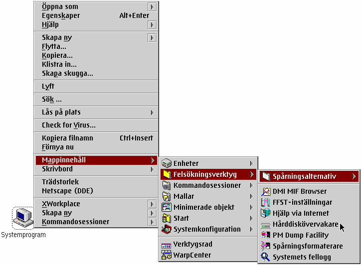

H„r „r ett exempel ("Systemprogram" mappen p† ”vers„ttarens h†rddisk):

Som du kan se, visas inneh†llet i "Systemprogram" mappen; submapparna i den h„r mappen leder till subsekventa submenyer.
Menyn "Mappinneh†ll" beter sig likadant som &warpcenter;'s g”r: om du klickar p† n†gon post, kommer dess standardvisning att ”ppnas. Om du klickar p† en mapps menypost, kommer en annan submeny med inneh†llet i den mappen att ”ppnas; om du klickar p† den med musknapp 2, kommer WPS mappen att ”ppnas som ett f”nster ist„llet.
"Mappinneh†ll" funktionerna anv„nds i tv† olika sammanhang:
P† sk„rmbilden ovanf”r, kan detta ses hos menyposten "Mappinneh†ll".
Mappens inneh†llsmeny kan v„xlas mellan p† och av hos "Kontextmeny" sidan i det nya
"Workplace Shell" objektet.
P† den ovanst†ende bilden, „r den "frekventa" menyposten en mapp p† mitt Skrivbord i vilken jag l„gger saker jag vill komma †t ofta. Jag har deklarerat den mappen till att vara min enda "favorit" mapp, s† allt jag l„gger i den kommer att upptr„da i alla kontextmenyer.